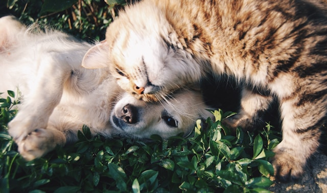

Pati Dostları Veteriner Kliniği

Hoş Geldiniz!
Pati Dostları Veteriner Kliniği olarak, minik dostlarınızın sağlığı için burada olmaktan gurur duyuyoruz. Uzman ekibimizle 7/24 hizmetinizdeyiz. Kliniğimizde, modern tıbbi ekipmanlar ve deneyimli veterinerler ile evcil hayvanlarınızın her türlü sağlık ihtiyacını karşılıyoruz.
Hizmetlerimiz
- Genel Muayene: Evcil hayvanlarınızın genel sağlık durumunu kontrol ediyor ve gerekli tedavi planını oluşturuyoruz.
- Acil Durum Müdahalesi: 7/24 hizmet veren acil durum ekibimizle, acil sağlık sorunlarına anında müdahale ediyoruz.
- Aşı Uygulamaları: Evcil hayvanlarınızın sağlıklı kalması için gerekli olan tüm aşıları uyguluyoruz.
- Röntgen ve Ultrason: Gelişmiş görüntüleme teknikleri ile doğru teşhisler koyuyoruz.
- Laboratuvar Hizmetleri: Kan tahlilleri ve diğer laboratuvar testleri ile hastalıkların tanısını koyuyoruz.
Çalışma Saatlerimiz
| Gün |
Saat |
| Pazartesi - Cuma |
09:00 - 18:00 |
| Cumartesi |
10:00 - 16:00 |
| Pazar |
KAPALI |
Ekibimiz
Kliniğimizde çalışan veterinerlerimiz ve teknisyenlerimiz, alanlarında uzman ve deneyimli profesyonellerden oluşmaktadır. Minik dostlarınızın sağlığı için her zaman en iyi hizmeti sunmayı hedefliyoruz.
- Dr. Ayşe Yılmaz: Genel Cerrahi ve İç Hastalıkları Uzmanı
- Dr. Mehmet Demir: Acil Durum ve Travma Uzmanı
- Veteriner Teknikeri Ali Çetin: Röntgen ve Laboratuvar Hizmetleri Sorumlusu
Bizimle İletişime Geçin
Adres: 123 Veteriner Sokak, Hayvansever Mahallesi, 34500 İstanbul
Telefon: +90 212 345 6789
Email: info@patidostlari.com
Sosyal Medyada Bizi Takip Edin